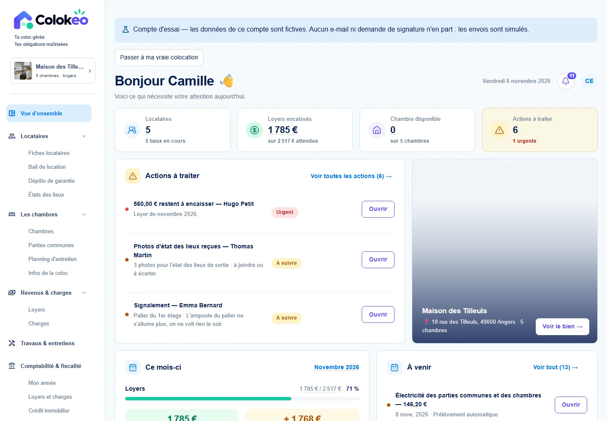

COMPARAISON DES APPROCHES
Quel outil pour ta colocation ?
Le choix dépend de ton besoin : gérer les chambres et les locataires, déléguer la collecte ou aller jusqu’à la transmission fiscale.
| Solution | Orientation | Fonctions documentées | Ce qui peut faire la différence |
|---|---|---|---|
| Colokéo | Colocation meublée gérée en direct | Navigation par bien, chambre et locataire ; bail, dépôt et état des lieux | Dossiers et documents reliés aux loyers, points à traiter et à la préparation LMNP |
| Rentila ↗ | Gestion locative de plusieurs types de biens | Bail commun ou baux individuels ; lots par chambre, loyers et quittances | À comparer si tu veux surtout gérer des lots variés ; explore dans Colokéo le suivi du bien et des parties communes |
| Monsieur Hugo ↗ | Gestion locative avec services et garanties | Baux individuels ou uniques ; signature électronique et collecte des loyers annoncées | À comparer si tu veux déléguer ou souscrire des services ; Colokéo vise la gestion en direct et la préparation du dossier |
| Ownily ↗ | Comptabilité LMNP et gestion locative | Gestion des locations et suivi des loyers annoncés | Ownily annonce la transmission fiscale EDI ; Colokéo met l’accent sur le parcours complet de la colocation et la préparation de l’année |
| Gererseul ↗ | Gestion locative en autonomie | Baux, états des lieux, quittances, relances et rappels annoncés | À comparer si tu veux une gestion généraliste ; explore dans Colokéo le suivi par chambre, l’entretien et le dossier d’impayé |
Les fonctions citées sont celles décrites sur les pages officielles liées. Le tableau ne tranche pas sur les fonctions non documentées et ne compare pas les prix ou les garanties contractuelles.
À VÉRIFIER DANS LA DÉMO
La spécialisation Colokéo se voit dans le parcours.
Passe d’une chambre à son occupant, de son bail aux pièces du dossier, puis d’un paiement partiel à l’action à traiter. C’est ce lien entre la vie de la coloc, les documents et les chiffres que tu peux tester.

Fais le tour de Colokéo.
À l’inscription, choisis le jeu de données fictives pour explorer une colocation déjà renseignée.